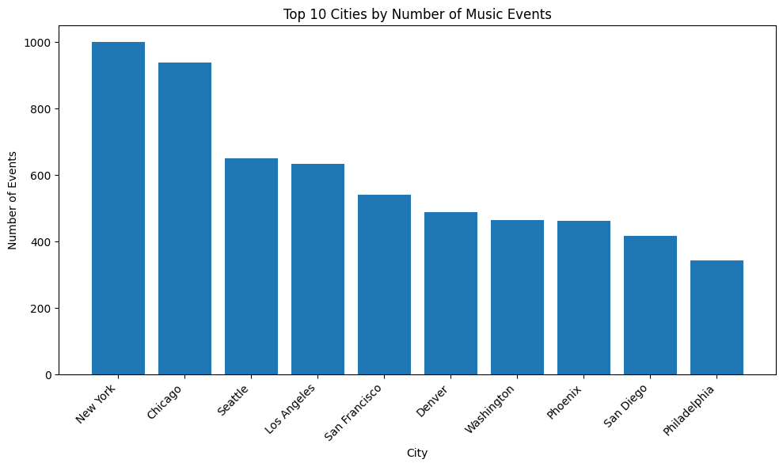
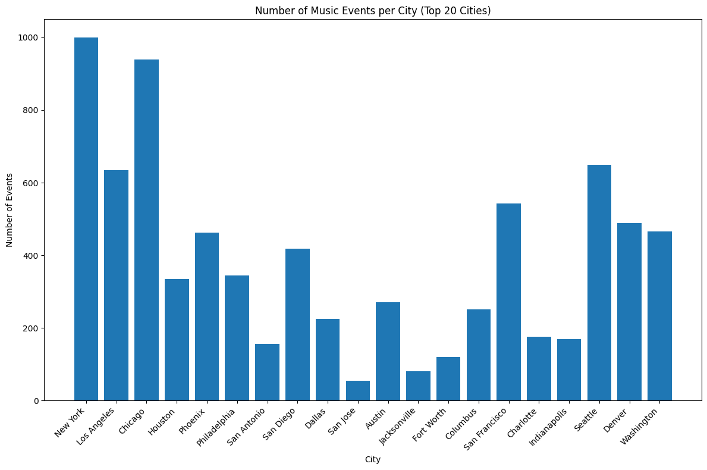
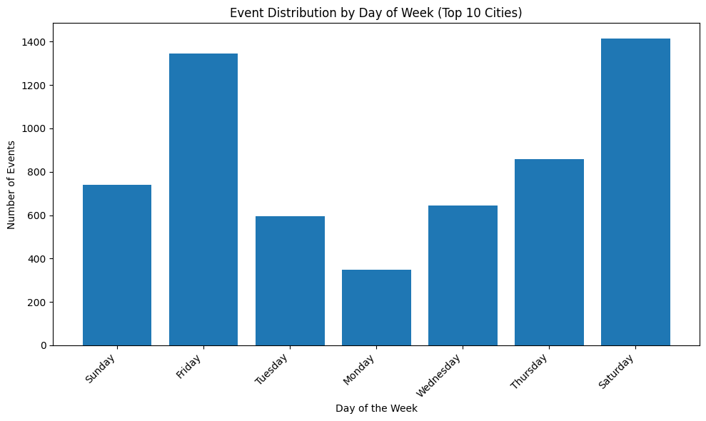
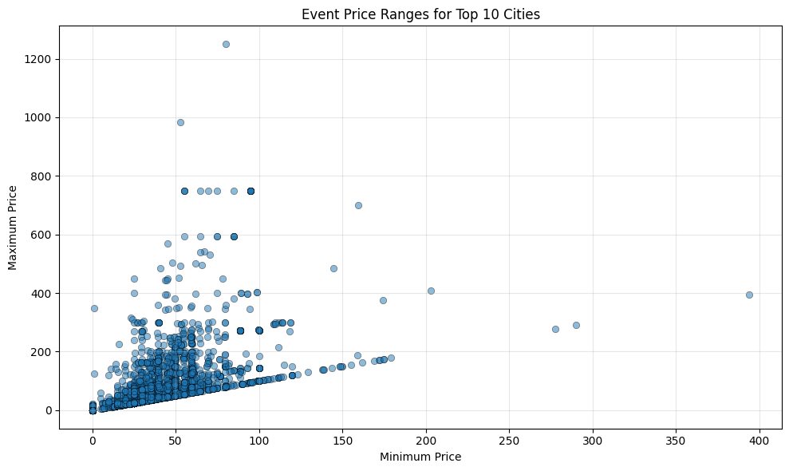
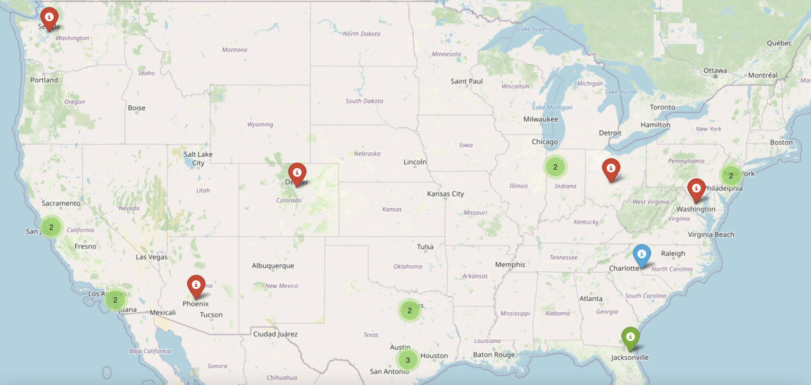
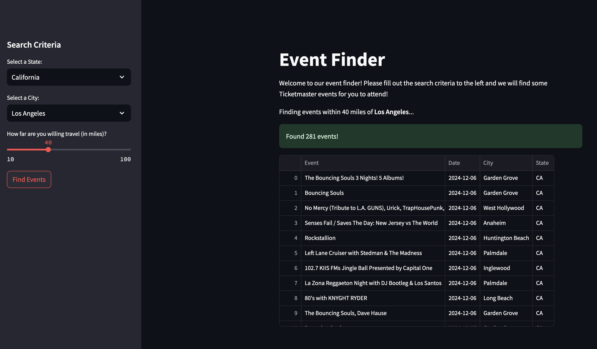

import numpy as np
import pandas as pdFinal Project Report
For our final project, we decided to leverage the Ticketmaster API to recommend events based on user preferences. Users provide their city, state, and the maximum distance they are willing to travel. We then identify events happening nearby that are within the radius they are willing to go. The result of this is a personalized list of events that matches the user’s location and traveling preferences, making it easier for them to discover and go to events near them.
Data Description
The Ticketmaster Discovery API is a RESTful API that allows developers to search for and retrieve information about live events such as concerts, theater, and sports events, as well as when and where they are taking place. Specifically, we used the API’s ability to filter events by city, state, and radius to identify events near them. We accessed details such as event name, venue, and date to provide users with event recommendations.
We also used the uscities.csv file from https://simplemaps.com/data/us-cities, which includes latitude and longitude coordinates for cities across the U.S., to enrich our analysis. With the help of the geopy library and its geodesic function, we calculated accurate distances between the user’s chosen location and nearby cities. This allowed us to identify all the cities within the travel radius specified by the user, making it easy to localize events and create a more tailored recommendation dataset. The combination of the API and the uscities.csv file are what allow us to create the final product, Event Finder.
Exploratory Data Analysis
Our exploratory data analysis (EDA) focused on understanding the distribution and characteristics of events in the top cities. First, we explored the number of events in the top 10 cities. Cities like New York and Chicago lead with approximately 1,000 events each, nearly 40% more events than any other city. This highlights New York and Chicago as major hubs for event hosting, concerts, and other entertainment opportunities. 
Next, we expanded our analysis to the top 20 cities, to try to get a better idea for what entertainment looked like around the country, while not making the analysis overwhelming. This expansion showed significantly more variability in the event frequency in major US cities. For instance, San Jose, at the lower end of the spectrum, hosts only 54 events, contrasting sharply with New York’s 1,000. This uneven distribution shows just how incredible it is for New York and Chicago to have so many events going on. San Jose is by no means a small city, but culture differences result in quite a drastic comparison with respect to entertainment options. This extended analysis helped us narrow down which cities we wanted to make sure we included in our final product. 
Additionally, we also looked at the distribution of the events by day of the week, finding that Friday and Saturday had the most events and Monday had the least, which is to be expected given the US work week. 
Lastly, we analyzed the event price ranges for the top 10 cities, revealing a wide spread of prices. Most events were concentrated on the lower side, but there were some events with prices that exceeded $1,200. 
We also created an interactive map using Folium to visualize the distribution of events across the entire country. This map has markers for the top 20 cities, with color-coded markers indicating the amount of events. Red markers are cities with over 200 events, blue markers are cities with event counts between 100-200 events, and green markers are cities with below 100 events. This map doesn’t just show event hotspots like New York, Los Angeles, and Chicago—it also shines a light on areas with fewer events, like smaller towns and rural regions that often get overlooked. Clearly the US has some major hotspots for events in the largest cities, but most of the country does not have immediate access to more than 100 events at a time. Of course, here we cannot see all of the cities in the US, so it is not the case that there are no events going on in much of rural America, but the frequency and variety of events an individual may attend is most definetly dependant on how close they live to one of these major entertainment hotspots. Here is a picture of what the interactive map looks like - we include the original html in our submission for interested readers. 
Creation of Event Finder
After exploring the data, we began working on our final product. We created a simple interface for users to interact with the Ticketmaster API. The user will provide three pieces of information: a US state, a US city within the given state, and how far they are willing to drive in miles. We process this data and then return to the user all of the events that Ticketmaster services in their area.
To do this we wrote four functions. The main function call is to get_events_nearby. This function first deals with gathering all of the cities within the travel radius using helper function get_cities_within_radius. This helper function uses the uscities.csv file and the geodesic Python library to find all of the cities within the provided travel radius. Then, get_events_nearby iterates through all of the cities in the travel radius and calls the helper function handle_ambigious_city for each one. This function deals with any duplicate city names within a state and gathers all of the events in the given city using the Ticketmaster API. Finally, get_events_nearby returns a list of all of the events occurring within the travel radius. All of the code for these functions can be found in functions.py in our repository. This encompasses all of the work we did when creating the backend.
Here is an example query the corresponding output. Suppose a user wants to see all the events within 20 miles of San Francisco, California.
from functions import *
# Sample User Input
state = 'CA'
city = 'San Francisco'
radius = '20'
output = get_events_nearby(city, state, radius)
output_df = pd.DataFrame(output)
output_df.head()| 0 | 1 | 2 | 3 | 4 | |
|---|---|---|---|---|---|
| 0 | Laurie Berkner: The Greatest Hits Solo Tour | 2025-05-03 | San Francisco | CA | G5vYZb2kA831G |
| 1 | Rauw Alejandro - Cosa Nuestra World Tour | 2025-04-12 | San Francisco | CA | G5vYZb9RqM7Fi |
| 2 | Stray Kids World Tour [dominATE SAN FRANCISCO] | 2025-05-28 | San Francisco | CA | G5vYZbpS433cP |
| 3 | My Chemical Romance: The Black Parade | 2025-07-19 | San Francisco | CA | G5vYZbprHfxKf |
| 4 | Grand National Tour: Kendrick Lamar and SZA | 2025-05-29 | San Francisco | CA | G5vYZb9nWYxmF |
After completing the functions for data processing and API interaction, we shifted our focus to developing the user interface. For this, we used the open-source Streamlit Python package, which allowed us to create a web application entirely within Python. The interface guides users through the process of finding events by presenting a sidebar with dropdown menus and sliders to collect input. Users select a state and a city from dropdown menus, which are filtered to show only cities within the chosen state, and then specify a travel radius using a slider. The minimum travel radius is 10 miles, and the maximum is 100 miles.
When the user clicks the “Find Events” button, the app triggers a call to the get_events_nearby function, passing the selected inputs to the function. A progress bar also appears to give the user an idea for how long the query will take. The function processes these inputs as described above the in backend implementation and retrieves relevant event data from the Ticketmaster API. Finally, the function returns a list of events within the specified radius. These events are displayed in a table to the user, sorted by date, providing a clear and organized view for the user.
We utilized the st_aggrid library, an extension of streamlit, to enhance the table with interactive features. Users can select an event directly from the table, which updates the session state to reflect the chosen event ID. This triggers a second function, get_event_details, to retrieve detailed information about the selected event, including its name, date, venue, description, and pricing. All of these details are presented to the user, including a ticket purchase link if it is available. This is all to make it as easy as possible for the user to select which events they are interested in and buy tickets as easily as possible. The code for implementing the web app is located in the event_finder.py file in our repository. The code for implementing the web app is located in the event_finder.py file in our repository. Below is an preview of the web app:

Here, the user searched for events within 40 miles of Los Angeles, California. In our final product, the dataframe is sorted by date to ensure that the user sees the events occurring soonest at the top, making it easier to prioritize upcoming events. Please take a look at our Git repository, concert-finder, to run the web app.